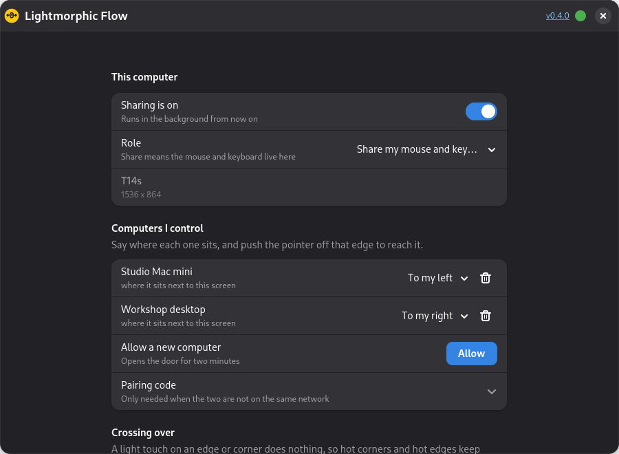

Install, allow, push.
Three moments, once, and then you forget it is there.
Install on each
One package per computer. It sets up the permission it needs to read your mouse and keyboard, and adds itself to the applications menu.
Allow the new one
On the machine with the keyboard, press Allow. The other one appears in a list by name. No addresses, no codes, nothing to copy.
Push across
Say which side each computer sits on, then push the pointer firmly off that edge. Your keyboard goes with it. Push back to come home.
Your screen edges stay yours.
This is the part other sharing tools get wrong. They claim an edge, and from then on your hot corners and hot edges are gone. Flow never claims one.
A light touch does nothing
Run the pointer into the edge the way you always did and it simply stops there. Your Activities corner, your dock, your workspace edges all behave exactly as before.
A deliberate push crosses
Keep pushing — about 90 pixels' worth, within half a second — and the pointer moves to the next computer. It is a different gesture from a touch, so the two never get confused.
Corners are left alone
The last stretch of each edge next to a corner never crosses at all, so a dash into the top-left corner is always the corner and never the other machine.
Nothing is taken until you leave
While the pointer is on your own screen, your mouse and keyboard are not touched. Touchpad gestures, pointer speed and every shortcut work as they always did.
One computer to an edge, up to four. Any edge you leave empty carries on doing nothing at all.
What it does
Small on purpose. It shares three things and stops there.
The mouse
Movement, every button and both scroll directions, sent as you make them. The laptop touchpad comes too, once the pointer has left your screen.
The keyboard
Every key, including the ones with pictures on them. Shortcuts land on the machine the pointer is on, not on yours.
The clipboard
Copy text on any of the machines and paste it on any of the others. It follows you about without being asked, which is the bit that is usually missing.
Finds them itself
Each copy says hello on your network. The others show up in a list by name, so there is no address to look up and nothing to type.
Shut by default
Every link is encrypted. A new computer only gets in while you have pressed Allow, and after that it is remembered. Anything else is turned away.
Almost nothing
About 1,700 lines of plain Python with no libraries to install. You can read the whole thing in an afternoon, which is rather the point.
What you need
- Two or more Linux computers on the same network.
- Python 3.9 or newer, which every current Linux already has.
- GTK 4 and libadwaita for the settings window — also already there on a modern desktop.
wl-clipboardon Wayland, orxclipon X11, for the shared clipboard.- Nothing else. The permission it needs is set up by the installer and works straight away.
If the computers are not on the same network — over a private tunnel, say — the announcements will not reach, and you paste a pairing code across instead.
What it looks like
One window. Everything saves as you change it.

A tray icon that says where you are
It starts with your session and stays out of the way.
The icon is the answer
Yellow when the pointer is on this computer, dark when it has gone to another. One glance tells you which keyboard you are about to type on.
Click it to move
A menu of your computers by name, with where each one sits. Connect and disconnect, send the pointer to any of them, bring it back, or drop one computer on its own.
One dot for updates
Top right of the settings window, beside the version number. It is the only update control there is.
- Up to date. Click it to check there and then.
- A new version is waiting. Click to download it.
- Downloading, with a ring filling round the edge.
- Downloaded. Click to install it and restart.
- Could not reach GitHub to look.
Questions
Will my hot corners really still work?
Yes. That is the reason this exists. Flow never puts anything on your screen edges and never reacts to the pointer simply arriving at one. Crossing takes a separate, harder push that you would not make by accident, and the stretch of edge next to each corner is ignored entirely.
Does it work on Wayland?
Yes, and on X11, and it does not care which. It reads your mouse and keyboard from the kernel, underneath the desktop, so there is no permission dialog every time you start it and no difference in behaviour between the two.
What happens if it crashes while my pointer is away?
Your mouse and keyboard come straight back. They are only held for as long as the program is running, so if it stops, for any reason, they are released that instant. There is also a panic key, Ctrl + Alt + Shift + K, that brings everything home.
Can I move files between the computers?
No. Text on the clipboard, yes. Files, images and drag-and-drop, no. Keeping to those three things — mouse, keyboard, text — is what keeps it small and predictable.
Is anything sent over the internet?
No. Everything stays on your own network, and the links between the machines are encrypted. The only time it reaches out is to ask GitHub whether there is a newer version, which you can see happening on the update dot.
What about Windows or a Mac?
Not today. Linux only, at both ends.
Download
Install it on every computer you want to join up. There is no second step.
Debian, Ubuntu and Mint take the .deb. Fedora and openSUSE take the .rpm. Both install the program, the settings window, the background service and the one permission it needs.
Prefer to build it yourself? The whole thing is on GitHub, and the two build scripts are in packaging/.